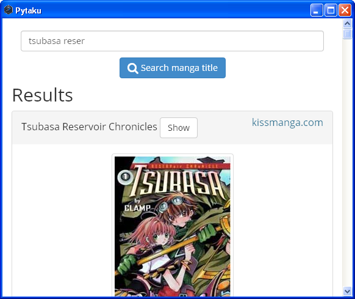

Setting up your development environment for a node-webkit project

Node-webkit lets you write cross-platform (Mac + Linux + Winbloze) desktop applications using HTML5 and nodejs. That’s a fancy way of saying “a webkit wrapper that also gives you filesystem access, disables same-origin policy and has nodejs embedded”. It’s the lazy web developers’ dream come true. Who needs Qt, GTK, or any other legitimate battle-tested, performant cross-platform GUI toolkit when you can slap in Bootstrap/Foundation with some hip JavaScript framework instead?
Joking aside, this is an interesting take on desktop development. Firefox OS is on the horizon, and even Ubuntu is pushing the “HTML5 apps as first-class citizens” paradigm. Why not give it a try?
If you already have experience in client-side web development tools, you can just clone node-webkit-hipster-seed and digest the code. That’s a project skeleton that integrates all kinds of stuff: Jade/Coffescript/LESS automatic compiler, node-webkit, grunt tasks…
This tutorial is like a stripped down version of that. In the end we’ll have:
-
Automatic app reload when source code changes with
livereload -
Single command to build binaries for mac + linux + win with
grunt - That’s it, really
Install node-webkit on your machine
Follow the README on node-webkit’s GitHub page to download a precompiled nw binary for your
platform. If you’re using Arch Linux, you’re in luck since there’s already an AUR package:
$ yaourt -S node-webkit
If you’re on Ubuntu or some other repo and you get some error about libudev.so.0, read this
for a hotfix.
The rest of this tutorial will assume that you have nw accessible as an executable in your $PATH.
Running an app
First, take a look at nw’s quickstart guide. We’ll make a somewhat different structure, allowing the dist directory to store our binary releases:
├── app/
│ ├── css/
│ ├── js/
│ ├── index.html
│ └── package.json
└── dist/
package.json stores the information that nw requires. Its content goes like this:
{
"name": "your-project-name",
"version": "0.0.1",
"main": "index.html",
"window": {
"toolbar": true
}
}
window.toolbar is true by default so we don’t actually need it. Switch it to false if you
want to hide the browser-like address bar.
To embed css/js files, don’t use absolute urls. Use relative ones like this:
<link href="css/style.css" rel="stylesheet">
There’s no point in using CDNs because we’re distributing the whole app with its assets as a one-time download. Things like automatic css/js minification or concatination aren’t needed either. For simplicity’s sake, we’ll just download a minified version of whatever js/css library that we need and stuff them into css or js dir. For example: (dist directory omitted)
app/
├── css
│ └── bootstrap.min.css
├── js
│ ├── bootstrap.min.js
│ ├── knockout.min.js
│ ├── jquery.min.js
│ └── app.js
├── index.html
└── package.json
If you’re experienced in front-end web development tools, feel free to go wild with bower, grunt/gulp/whatever. Again, check out the node-webkit-hipster-seed project if you know what you’re doing.
You can now test run your app with the nw <directory> command. In our case: nw app. Notice the
weird url, which is why we can’t use absolute urls in the first place:
file:///home/nhanb/Dropbox/small_projects/ajmg-nw/app/index.html
Once you’ve packaged your app to a single executable, the url will be something like this:
file:///tmp/.org.chromium.Chromium.IJWqkq/index.html
But let’s not get ahead of ourselves. Let’s solve the most obvious dev issue first:
Automatic reload
Sure enough, at first glance your app is just another html page. You may be tempted to run some
simple http server and open localhost in Google Chrome (python2 -m SimpleHTTPServer 8080
anyone?). There are tons of ways to make Google Chrome automatically reload a page, right?
But then, the true strength of node-webkit is the ability to use nodejs modules, which Google
Chrome certainly doesn’t offer. Therefore, the only way to check out how the app really works is
using nw app.
We’ll use livereload to make automatic reloading possible. The idea is quite simple: we fire off
a livereload daemon that watches for any change in our app/ directory. In our app, we embed a
certain piece of javascript that connects to that livereload daemon and refreshes the page
whenever a “change” event is broadcast.
There are many livereload daemon implementations. Considering the fact that most of us developers
have python and pip installed, let’s go with the livereload pip package (it’s only compatible
with python2, by the way). If you’re on Ubuntu and don’t know what I’m talking about:
$ sudo apt-get install python-pip
$ sudo pip install livereload
There are ruby/javascript implementations too. Google them if you prefer those things.
Either way, we can now fire off a livereload server:
# I don't know why but seems like the python implementation doesn't work
# when I type `livereload app`. Weird.
$ cd app
$ livereload .
Now how do we inject the livereload javascript? On Google Chrome there is an official livereload
plugin, but we’re using node-webkit so that’s not possible. No problem! The livereload daemon we
fired off earlier is actually a web server which also serves the necessary livereload client
JavaScript snippet too. Simply embed it to your index.html:
<script src="http://localhost:35729/livereload.js"></script>
Fire off the app with nw app again and you’ll have automatic reloading. Cool eh?
Another problem: we only want livereload in our development version, not in the released app. Let’s
modify our javascript snippet in index.html to only load livereload when a certain environment
variable is set to 1:
<script>
// Load livereload if in dev environment
if (process.env.NW_DEV_MY_AWESOME_PROJECT == 1) {
var script = document.createElement('script');
script.type = 'text/javascript';
script.src = 'http://localhost:35729/livereload.js';
document.body.appendChild(script);
}
</script>
Now to start the app:
$ export NW_DEV_MY_AWESOME_PROJECT=1
$ nw app
Simple cross-platform build command
To be honest, you can manually write shell scripts to build for each platform. Check out this wiki article if you prefer the do-it-yourself way.
But if you’re lazy (like me) and don’t have a problem using nodejs/grunt, just use the excellent grunt-node-webkit-builder. Again, for newcomers using Ubuntu:
$ sudo add-apt-repository ppa:chris-lea/node.js
$ sudo apt-get update
$ sudo apt-get install python-software-properties python g++ make nodejs
$ sudo npm install -g grunt-cli
$ # cd to your project root (the one containing app/ and dist/)
Create package.json and Gruntfile.js in project root:
├── app/
│ ├── css/
│ ├── js/
│ ├── index.html
│ └── package.json
├── dist/
├── Gruntfile.js
└── package.json
package.json:
{
"name": "whatever",
"version": "0.0.1",
"description": "Whatever",
"author": "Bui Thanh Nhan"
}
Gruntfile.js:
module.exports = function(grunt) {
grunt.initConfig({
pkg: grunt.file.readJSON('package.json'),
nodewebkit: {
options: {
build_dir: './dist',
// choose what platforms to compile for here
mac: true,
win: true,
linux32: true,
linux64: true
},
src: ['./app/**/*']
}
})
grunt.loadNpmTasks('grunt-node-webkit-builder');
grunt.registerTask('default', ['nodewebkit']);
};
Then:
$ npm install grunt grunt-node-webkit-builder --save-dev
$ grunt
The first time will be slow because grunt will download precompiled nw binaries for all supported
platforms, which will be stored in dist/cache/. From now you can compile for mac + linux + win
with a simple grunt command. The compiled binaries will be stored in dist/releases/.
Congratulations! You now know how to use yet another weird stack born out of the HTML5 craze that isn’t guaranteed to still be alive the next year (or even next month).